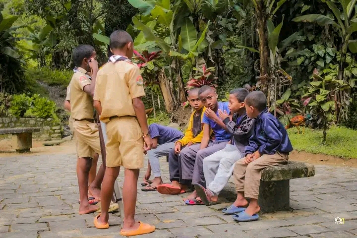
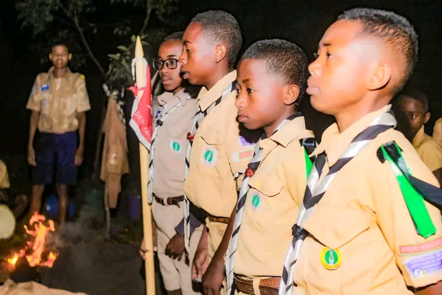
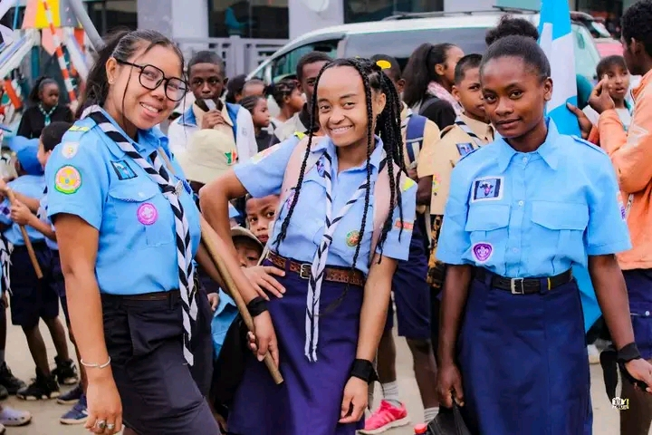
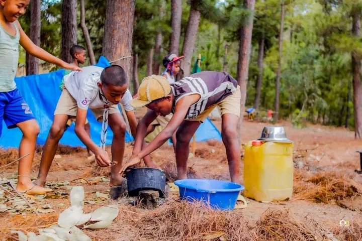
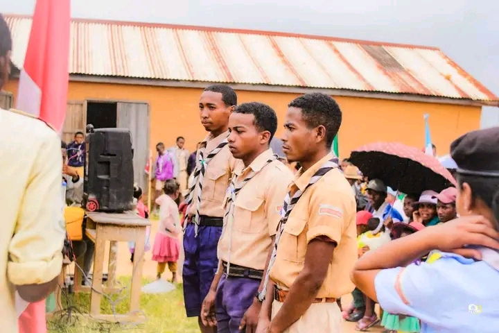
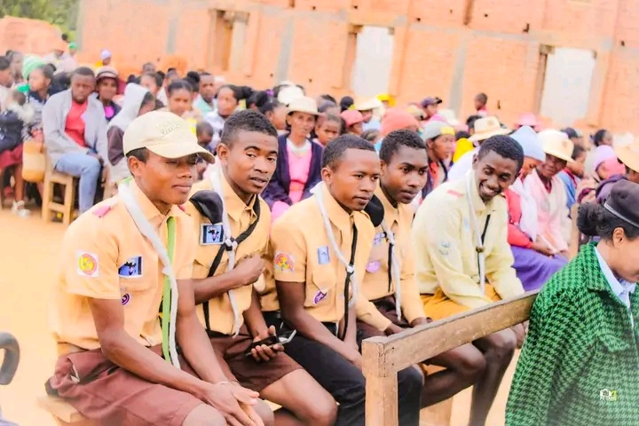
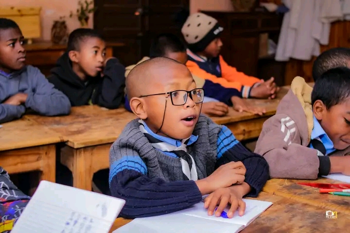
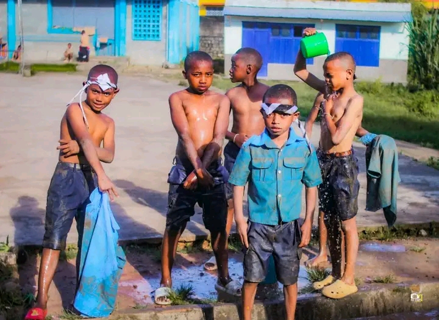

ACTIVITÉ PRINCIPALE
HAZA — La chasse
Premiers pas dans la grande aventure scoute. Découverte par le jeu, la chasse symbolique et l'imaginaire de la meute.

Fivondronana Faha-XII · Diocèse de Fianarantsoa
VONONA MANDRAKARIVA
Andrainjato Fianarantsoa — Groupe scout catholique éduquant la jeunesse malagasy à travers la méthode scout crée par Lord Baden-Powell, dans la foi et l'engagement.
Découvrir nos missions → Nous rejoindreNOTRE SLOGAN
MAINTY · FOTSY · HATRANY²
NOTRE LOCALISATION
Notre groupe est implanté à l'ECAR Notre Dame de Lourdes,
quartier d'Andrainjato à Fianarantsoa — capitale
spirituelle du sud
des Hautes Terres malgaches. Nous formons la 12e Fivondronana
du diocèse.
ECAR Notre Dame de Lourdes, Andrainjato Fianarantsoa
BP : 301 — Fivondronana Faha-XII NDL
Fivondronana Faha-XII

+100
JEUNES ENGAGES
DERNIERS MOIS
Quelques moments forts vécus par notre groupe au cours des derniers mois.

Mars 2025
Maharomby, Fianarantsoa

Février 2025
ECAR Andrainjato

Décembre 2024
Andranomafana, Vatovavy
Notre famille scoute
Quatre branches, quatre univers — chaque jeune progresse selon son âge, avec ses propres méthodes, totems et symboles.

ACTIVITÉ PRINCIPALE
Premiers pas dans la grande aventure scoute. Découverte par le jeu, la chasse symbolique et l'imaginaire de la meute.

ACTIVITÉ PRINCIPALE
L'apprentissage par l'action et la vie en patrouille. Chaque équipe porte le nom et l'esprit d'un animal totem.

ACTIVITÉ PRINCIPALE
Exploration, autonomie et leadership. La nature devient maître et terrain d'aventure.

ACTIVITÉ PRINCIPALE
L'engagement et la création de projets durables qui apportent ressources au groupe et formation aux jeunes.
NOTRE RAISON D'ÊTRE
Éduquer la jeunesse malgache par la méthode scout de Lord Baden-Powell, enracinée dans la foi catholique et le service envers les autres.
LE SCOUTISME
Le scoutisme, fondé par Lord Robert Baden-Powell en 1907, est un mouvement éducatif mondial. Il propose aux jeunes de devenir des citoyens responsables, autonomes et solidaires à travers le jeu, l'action concrète et la vie en plein air.
Le scoutisme catholique ajoute à cette méthode une dimension spirituelle essentielle : la rencontre personnelle avec le Christ, la vie sacramentelle, la prière et le service inspiré de l'Évangile.
Notre groupe vit cette mission au cœur d'Andrainjato Fianarantsoa, formant chaque semaine environ 100 jeunes des Hautes Terres.

« Essayez de laisser ce monde un peu
meilleur que vous ne l'avez trouvé. »
— Baden-Powell
METHODE SCOUT
Six piliers qui structurent toute notre pédagogie d'éducation par l'action.
Le socle moral du scout : engagement personnel, parole donnée, code de vie partagé.
La patrouille comme cellule de base. On apprend en faisant ensemble, on grandit par la responsabilité.
Apprendre en faisant — Learning by doing. Pas de théorie sans expérience vécue.
Chaque jeune avance à son rythme, étape par étape, à travers défis et badges concrets.
La nature comme cadre éducatif : autonomie, débrouillardise, respect du vivant et émerveillement.
Une relation éducative — les chefs accompagnent sans imposer, guident par l'exemple.
Scout Catholique de Madagascar
Au-delà de la méthode scoute, notre groupe vit et exige une vie spirituelle forte, au service du Christ et de l'Église.
Temps quotidiens et célébrations qui rythment la vie du groupe.
Approfondissement de l'Évangile et de la doctrine catholique adapté à chaque âge.
Bonne action quotidienne, engagement paroissial, aide concrète aux plus démunis.
Fondement de toute action : aimer Dieu et son prochain comme soi-même.
LA VIE DU GROUPE
Du dimanche matin aux grands camps en pleine nature, voici comment nous vivons le scoutisme à Andrainjato.
AU QUOTIDIEN
Ce que nous vivons chaque semaine ensemble.
Chaque dimanche matin à l'ECAR Notre Dame de Lourdes Andrainjato — temps fort de la semaine.
Maîtrise des nœuds scouts, signalisation, codes secrets et techniques de plein air.
Engagement écologique : transformation des déchets en objets utiles pour la communauté.
Esprit d'équipe, fair-play et dépassement de soi à travers le sport collectif.
Apprentissage des chants scouts, animations de feux de camp et célébrations liturgiques.
Grands jeux par patrouille, jeux de pistes et défis qui renforcent l'esprit de groupe.
Grands camps
Nos deux grands camps de l'année — temps forts d'aventure et de fraternité.

Maharomby, Fianarantsoa
Notre dernier grand camp, vécu en pleine nature à Maharomby. Aventure, fraternité et progression spirituelle pour toutes les branches.

Andranomafana
Camp d'été à Andranomafana — un cadre exceptionnel pour vivre intensément l'expérience scoute, avec veillées, randonnées et visites des lieux.
Cérémonies & rites
Les grands moments qui marquent la progression de chaque scout.

Engagement solennel devant Dieu et le groupe — moment fondateur de la vie scoute.
Rite de passage — chaque jeune reçoit le foulard aux deux couleurs du groupe.

Reconnaissance des jeunes appelés à exercer une responsabilité de leadership.
Rencontre indispensable pour expliquer notre mission et co-éduquer ensemble les jeunes.
En images








CONTACTEZ-NOUS
Une question ? Un projet ? Écrivez-nous via WhatsApp, nous vous répondrons dans les meilleurs délais.
FIVONDRONANA - FAHA-XII, ANDRAINJATO
034 09 034 15
+261 33 12 338 00
Antily Fiv NDL Andrainjato
ECAR Notre Dame de Lourdes Andrainjato Fianarantsoa
BP : 301
Fivondronana Faha-XII NDL — Diocèse de Fianarantsoa
Au clic sur « Envoyer », votre message s'ouvrira dans WhatsApp et sera chez nous.
Devenez acteur du changement et vivez une expérience unique au service des autres.